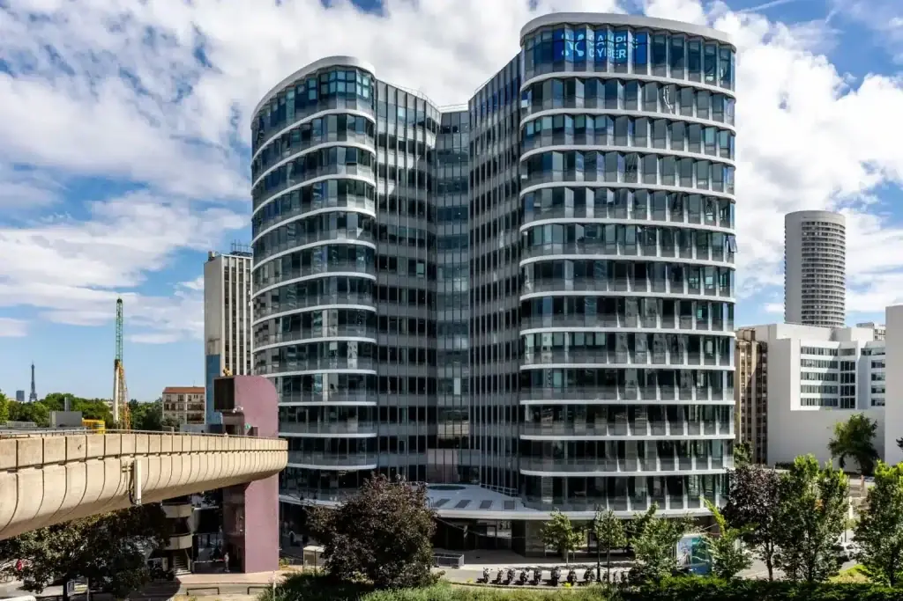

Mama Shelter Paris La Défense
Situé à quelques pas du Campus Cyber, l'établissement constitue l'une des solutions d'hébergement les plus proches du lieu de l'événement.
Accéder au site officielJeudi 26 novembre 2026 · Campus Cyber
Adresse, transports, hébergement à proximité et réponses aux questions les plus fréquentes. Tout ce qu'il faut savoir avant le 26 novembre.
DualTech 2026 se tient le jeudi 26 novembre 2026, de 8h30 à 19h00, au Campus Cyber (5-7 rue Bellini, 92800 Puteaux), au cœur du quartier d'affaires de La Défense. L'accès est gratuit mais nominatif : il se fait sur accréditation validée par l'organisation, avec une pièce d'identité à présenter à l'entrée. Le site est desservi par le RER A, le Transilien L, la ligne 1 du métro et le tramway T2 (station La Défense Grande Arche) et il est accessible aux personnes à mobilité réduite. Aucun parking n'est réservé pour l'événement.
Mis à jour le 28 octobre 2026 par l'équipe DualTech.

2026 / La DéfenseLieu et accès
Le Campus Cyber est un lieu phare dédié à la cybersécurité qui rassemble les principaux acteurs nationaux et internationaux du domaine. Il permet en particulier d'accueillir sur un même site des entreprises (grands groupes, PME), des services de l'État, des organismes de formation, des acteurs de la recherche et des associations.
Campus Cyber, 5-7 rue Bellini, 92800 Puteaux
RER A et Transilien L, station La Défense Grande Arche. Métro 1, terminus La Défense.
Sur accréditation nominative, pièce d'identité demandée à l'entrée.
Site accessible aux personnes à mobilité réduite.
Hébergement
DualTech ne dispose pas de contingent de chambres réservé. Plusieurs établissements situés à proximité du Campus Cyber permettent toutefois de rejoindre facilement le lieu de l'événement. Les réservations sont à effectuer directement auprès des hôtels.
Situé à quelques pas du Campus Cyber, l'établissement constitue l'une des solutions d'hébergement les plus proches du lieu de l'événement.
Accéder au site officielÉtablissement situé à Puteaux, à proximité du quartier d'affaires de La Défense et de ses principaux accès.
Accéder au site officielÉtablissement situé à Puteaux, à proximité du quartier de La Défense et des bords de Seine.
Accéder au site officielRésidence hôtelière proposant des studios et appartements équipés à proximité du quartier d'affaires de La Défense.
Accéder au site officielCette sélection est communiquée à titre indicatif. DualTech n'entretient aucun lien commercial avec les établissements mentionnés et n'intervient ni dans les réservations ni dans les conditions tarifaires proposées. Il est recommandé d'effectuer les réservations suffisamment en amont de l'événement.
Questions fréquentes
Une question qui n'est pas listée ici ?
Contactez l'équipe DualTechL'industrie duale conçoit des technologies dont les applications servent à la fois les marchés civils et les besoins de défense et de sécurité. Le quantique, le spatial, la robotique, l'intelligence artificielle et les matériaux avancés en sont les principales filières.
L'événement s'adresse aux représentants étatiques, aux industriels, aux dirigeants de PME et ETI stratégiques, aux investisseurs, aux chercheurs et aux acteurs du financement de l'innovation. L'accès se fait sur accréditation validée par l'organisation.
La zone de La Défense connaît une forte demande en semaine. Il est recommandé de réserver plusieurs semaines avant l'événement, en particulier pour les hôtels les plus proches du Campus Cyber.
Le Campus Cyber est desservi par le RER A, le Transilien L, la ligne 1 du métro et le tramway T2, tous à la station La Défense Grande Arche ou Esplanade de la Défense. Aucun parking n'est réservé sur place pour l'événement.
Une pièce d'identité est demandée à l'entrée pour tous les participants accrédités, l'accès étant nominatif.
L'édition 2026 se tient au Campus Cyber, à La Défense, le 26 novembre 2026. La première édition s'était tenue au Palais du Luxembourg en février 2026.
400 places sont disponibles sur inscription préalable. Chaque demande est examinée par l'organisation avant confirmation.